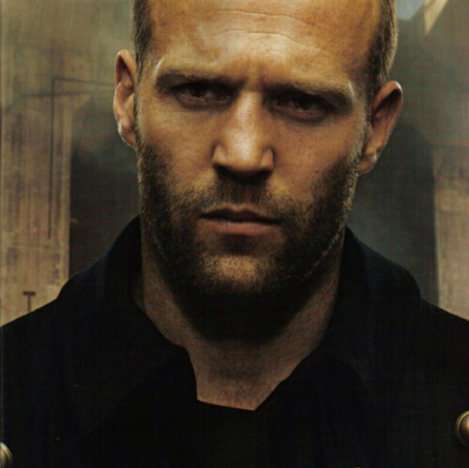

Home
PC Website
DIV + CSS
Website
Mobile App
App
Mobile
Learning
Learning To Htmlcss
Learning To JS
Learning To HTML5+CSS3
Tools
Url Website
Tools

App Demo
微信端app案例，请扫描二维码，体验更佳
Mobile Demo
PC端不支持touch触摸事件，请扫描二维码，体验更佳
DIV + CSS
仿站练习和other
Website
工作做过的PC端网站
Learning To Htmlcss
Learning To JS
Learning To HTML5+CSS3
Url Website
Tools
Boke
努力是不会后悔的
上一页
下一页
该分类下暂无内容